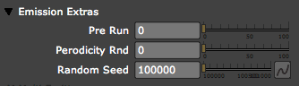

Emitter tab> Emission Extras group
This group has three Emitter controls that are used infrequently.

The Emission Extras group.
Pre Run
This control is used to pre-run the system so that particles can be visible at the first frame.
The Pre Run value is a percentage value where 0% is no pre-run. At a value of 0, the simulation essentially starts at the first frame where no particles have been emitted. A value of 100 translates to a 100% completion of the emission of particles on the first frame. At 100%, all particles that should be emitted at the first frame will appear based on Emitter controls such as Velocity and the Particle/sec life.
Periodicity Rnd
This control is used to emit particles at random intervals. It is only useful when using a Directional Emitter with Direction Spread at 0.
Random Seed
The Random Seed controls all randomness controls in the effect, such as Velocity Random. It is useful, for instance, when you want to duplicate an effect and add a slight variation of particle positions.